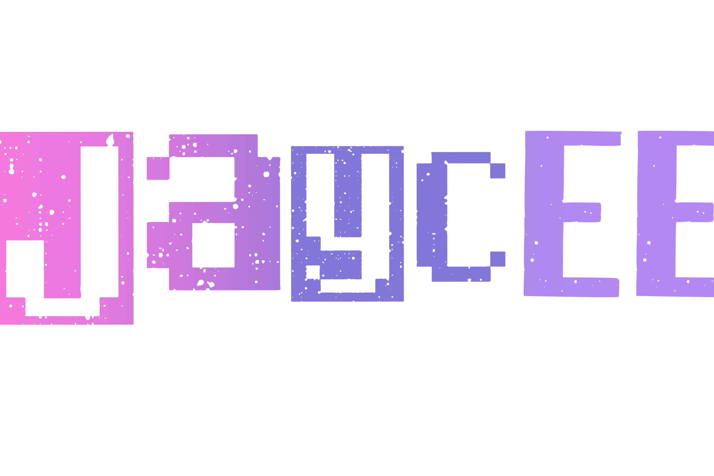

LARS - Building a 2D Vector Type in Rust
Learning Goals
By the end of this lesson, students will:
- Understand how 2D vectors are represented mathematically and in code.
- Implement a Vec2 struct in Rust that supports basic vector operations.
- Learn about traits, operator overloading, and code organization in a math-focused crate.
- Write unit tests to validate mathematical correctness.
Background: What is a Vector?
As you hopefully know from school, a vector is a quantity that has both magnitude (length) and direction. If not, I will give you a whistlestop tour, or you can read an introductory article here.
In 2D space, we have multiple ways to notate vectors, the main one I will use is "Column Notation", which shows a vector as:

Another common way to represent vectors is using Unit Vectors and Components.
Unit Vectors
Unit vectors are vectors that has a magnitude of 1 in a specific direction. for example:
Therefore, to express a vector with x-component 3 and y-component 4, with unit vectors, we can write:
Magnitude

Magnitude (or length) of a vector is the distance from the origin to the point defined by the vector. As you should see from the diagram above, it is calculated using the Pythagorean theorem:
Where the notation for a vector V's magnitude is | V | .
Vector Addition and Subtraction
Vectors can be added and subtracted component-wise. For example, given two vectors:
The addition and subtraction of these vectors is defined as:
Scalar Multiplication and Division
Vectors can be multiplied or divided by a scalar (a single number) by multiplying or dividing each component of the vector by that scalar. For example, given a vector:
The scalar multiplication and division of this vector by a scalar k is defined as:
The Dot Product
The dot product is a method for multiplying 2 vectors, it is notated mathematically as follows:
There are 2 methods to calculate the dot product, this is the first:
The second method:
Vectors are foundational in: - Geometry (lines, points, and normals)
- Physics (velocity, force, acceleration and pretty much everything else!)
- Computer graphics (movement, transformations)
- Game development (positions, rotations, collision detection)
Let us now take our first step towards creating a 2D vector struct in Rust!
Task 1: Defining a 2D Vector Type
First off, we need to create a Rust struct called Vec2 to represent a 2D vector.
- It should contain (x,y) variables
- You should Derive common traits such as Clone, Copy, Debug, PartialEq and Constructor
- Finally, you should define a few useful common constant vectors such as ZERO, ONE and unit vectors for the x and y directions.
This sets the foundation for all vector operations.
#[derive(Clone, Copy, Debug, PartialEq, PartialOrd, Constructor)]
pub struct Vec2 {
pub x: f64,
pub y: f64,
}
impl Vec2 {
pub const ZERO: Vec2 = Vec2 { x: 0.0, y: 0.0 };
pub const ONE: Vec2 = Vec2 { x: 1.0, y: 1.0 };
pub const UNIT_X: Vec2 = Vec2 { x: 1.0, y: 0.0 };
pub const UNIT_Y: Vec2 = Vec2 { x: 0.0, y: 1.0 };
}
Task 2: Computing Magnitude (Length)
Using the Pythagorean theorem, implement a method on Vec2 to compute the magnitude (length) of the vector.
impl Vec2 {
pub fn mag(&self) -> f64 {
(self.x * self.x + self.y * self.y).sqrt()
}
}
Task 3: Vector Arithmetic
Using rusts operator overloading capabilities, implement addition and subtraction for Vec2 so that you can add and subtract vectors using the + and - operators.
I would recommend using the derive_more crate to make this easier.
// Using Derive more for operator overloading
use derive_more::{Add, Sub};
#[derive(Add, Sub, Div, Mul, Neg, Clone, Copy, Debug, PartialEq, PartialOrd, Constructor)] // The same as Task 1 but withAdd and Sub traits
pub struct Vec2 {
pub x: f64,
pub y: f64,
}
// Manually implementing traits if not using derive_more
impl std::ops::Add for Vec2 {
type Output = Vec2;
fn add(self, other: Vec2) -> Vec2 {
Vec2 {
x: self.x + other.x,
y: self.y + other.y,
}
}
}
impl std::ops::Sub for Vec2 {
type Output = Vec2;
fn sub(self, other: Vec2) -> Vec2 {
Vec2 {
x: self.x - other.x,
y: self.y - other.y,
}
}
}
Task 4: The Dot Product
Implement a method on Vec2 to compute the dot product between two vectors as we defined earlier. I recommend implementing this as a method called dot that takes &self and another Vec2 as an argument and returns a f64.
pub fn dot(&self, other: &Vec2) -> f64 {
(self.x * other.x) + (self.y * other.y) // Method Two
}
Task 5: Component Mapping
Implement a method on Vec2 called map that takes a closure as an argument. This closure should take a single f64 and return a f64. The map method should apply this closure to both the x and y components of the vector and return a new Vec2 with the results.
Mathematically speaking, we are applying a function "f" to each component of the vector.
pub fn map<F>(&self, f: F) -> Vec2
where
F: Fn(f64) -> f64,
{
let fx = f(self.x);
let fy = f(self.y);
Vec2 { x: fx, y: fy }
}
Task 6: Normalising a Vector
Normalizing a vector means scaling it to have a magnitude of 1 while maintaining its direction. Implement a method on Vec2 called normalize that returns a new Vec2 that is the normalized version of the original vector.
The map function from Task 5 may be useful here.
pub fn normalize(&self) -> Vec2 {
let m = self.mag();
if m == 0.0 {
return Vec2::ZERO; // or handle zero-length vector case as needed
}
self.map(|i| i / m)
}
Task 7: Scalar Multiplication and Division
Implement scalar multiplication and division for Vec2 so that you can multiply and divide a vector by a scalar using the * and / operators.
You can use the derive_more crate again to make this easier.
// With derive_more
use derive_more::{Mul, Div, Add, Sub};
#[derive(Add, Sub, Div, Mul, Clone, Copy, Debug, PartialEq, PartialOrd, Constructor)]
pub struct Vec2 {
pub x: f64,
pub y: f64
}
// Without derive_more
impl std::ops::Mul<f64> for Vec2 {
type Output = Vec2;
fn mul(self, scalar: f64) -> Vec2 {
Vec2 {
x: self.x * scalar,
y: self.y * scalar,
}
}
}
impl std::ops::Div<f64> for Vec2 {
type Output = Vec2;
fn div(self, scalar: f64) -> Vec2 {
Vec2 {
x: self.x / scalar,
y: self.y / scalar,
}
}
}
Task 8: Using Vec2 as a point
In many applications, 2D vectors are used to represent points in space.
We should implement a method on Vec2 called dist that takes another Vec2 as an argument and returns the distance between the two points represented by the vectors.
Perhaps we could also add an alias type of Vec2 called Point2, just to make the intent clearer when it is being used as a point
pub fn dist(&self, other: &Point2D) -> f64 {
(*self - *other).mag().abs()
}
...
pub type Point2D = Vec2;
Task 9: Testing and Validation
Write unit tests for all the methods and operator overloads you have implemented for Vec2. Ensure that your tests cover various cases, including edge cases like zero-length vectors.
#[cfg(test)]
mod tests {
use super::*;
#[test]
fn test_add() {
let v1 = Vec2::ZERO;
let v2 = Vec2::ONE;
assert_eq!(v1 + v2, Vec2::ONE);
}
#[test]
fn test_sub() {
let v1 = Vec2::new(5.0, 7.0);
let v2 = Vec2::new(2.0, 3.0);
assert_eq!(v1 - v2, Vec2::new(3.0, 4.0));
}
#[test]
fn test_mag() {
let v = Vec2::new(3.0, 4.0);
assert_eq!(v.mag(), 5.0);
}
#[test]
fn test_dot() {
let a = Vec2::new(1.0, 2.0);
let b = Vec2::new(3.0, 4.0);
assert_eq!(a.dot(&b), 11.0);
}
#[test]
fn test_map() {
let v = Vec2::new(1.0, 2.0);
let mapped = v.map(|x| x * 2.0);
assert_eq!(mapped, Vec2::new(2.0, 4.0));
}
#[test]
fn test_normalize() {
let v = Vec2::new(3.0, 4.0);
let n = v.normalize();
assert!((n.mag() - 1.0).abs() < 1e-10);
}
#[test]
fn test_scalar_mul() {
let v = Vec2::new(1.0, 2.0);
assert_eq!(2.0 * v, Vec2::new(2.0, 4.0));
}
#[test]
fn test_scalar_div() {
let v = Vec2::new(2.0, 4.0);
assert_eq!(v / 2.0, Vec2::new(1.0, 2.0));
}
#[test]
fn test_dist() {
let a = Point2D::new(1.0, 2.0);
let b = Point2D::new(1.0, 0.0);
assert_eq!(a.dist(&b), 2.0);
}
#[test]
fn test_zero_length_normalize() {
let v = Vec2::ZERO;
let n = v.normalize();
assert_eq!(n, Vec2::ZERO); // or however you choose to handle this case
}
#[test]
fn test_dot_perpendicular() {
let a = Vec2::UNIT_X;
let b = Vec2::UNIT_Y;
assert_eq!(a.dot(&b), 0.0);
}
// You can add more tests as needed, such as ones for commutativity, associativity, etc.
}
Conclusion and Next Steps
Congratulations! You have successfully implemented a basic 2D vector type in Rust with essential operations and tests.
This Vec2 struct can now serve as a foundation for more complex mathematical operations and applications in graphics, physics, and game development.
As next steps, consider exploring:
- Implementing additional vector operations such as the 2D cross product, angle between vectors, and projection.
- Extending the Vec2 struct to support more advanced features like interpolation (lerp)
In the next part of this series, we will build upon this foundation to create a 3D vector type, improve our 2D vector slightly and explore more complex mathematical concepts.
The code and ideas for this series is based on my lars maths crate, which you can find on GitHub
About the Author
J. Cooper (JayCee) is a software developer, Maths enthusiast and musician based in the UK. They are the creator and maintainer of the lars crate and they have various other projects in progress
GitHub: @JCooper-Bit
Project Repo: lars on GitHub